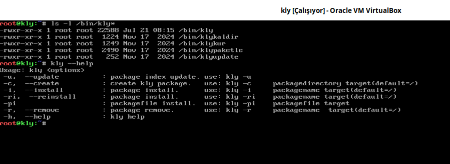

Paket sistemi, sisteme paket (kurma, kaldırma, index güncelleme) gibi temel işlemlerin yapılmasını sağlar. Temel Sistem kitabımımızda Paket Sistemi(kly) tasarımı anlatılmıştı. Bu kitapta, kly paket sistemi kullanılarak paketleri derleyeceğiz. Paket sistemi paketleri tekrar tekrar derlemek yerine paket olarak hazırlamakta ve istediğimiz zaman oluşturulan sisteme yüklenmekte veya kaldırılmaktadır. Bir sorun olduğu farkedildiğinde ise tekrar derlenerek sadece bu paket güncellenebilmektedir. Bu tür avantajlardan dolayı paket sistemini kullanacağız.
Burada paket sisteminin nasıl kullanılacağı anlatılacaktır. Paket sistemimiz Temel Sistem üzerinde base-file paketiyle sisteme yüklendi. Aşağıda kly Temel Sistem üzerinde hazır gelen paket sistemi uygulamalarımız görülmektedir.
{kind=link}

kly: klypaketle, klykur, klykadir, klyupdate scritplerimizin hepsini tek scriptte toplanmış halidir. Ayrıca paketlerin kurulumu ve kaldırılması sırasında bağımlılıklarınıda paketle birlikte kurmakta veya kaldırmakta. Bu dokümanda paketlerin derlenmesi, kurulması, kaldırılması vb. işlemler kly scripti kullanılarak yapılacaktır. klypaketle, klypaketle, klykur, klykaldir, klyupdate scripleri bir öğretici olması nedeniyle bulunmaktadır. Daha kapsamlı işlemler için yetersiz kalacaktır.
kly Paket Siteminin Debian'a Kurulumu¶
kly paket sistemi Temel Sistem üzerinde kurulu olarak gelmektedir. Üstte verilen resimde görülmektedir. Kullanımı ve parametrelerini unutmanız durumunda kly --help komutuyla kullanımı öğrenebilirsiniz.
Debian üzerinde kullanmak için kly scriptimizi indirip /bin konumuna kopyalayalım. Aşağıda verilen komutları sırasıyla çalıştırınız. kly paket sisteminin sorunsuz çalışması için busybox paketinin kurulu olması gerekektedir. Sorunsuz çalışmışsa Debian sistemimize kly paket sistemimiz kurulmuştur.
wget https://kendilinuxunuyap.github.io/_static/files/base-file/kly
sudo mv kly /bin/kly
sudo chown root:root /bin/kly
sudo chmod 755 /bin/kly
sudo apt update
sudo apt install busybox-static -y